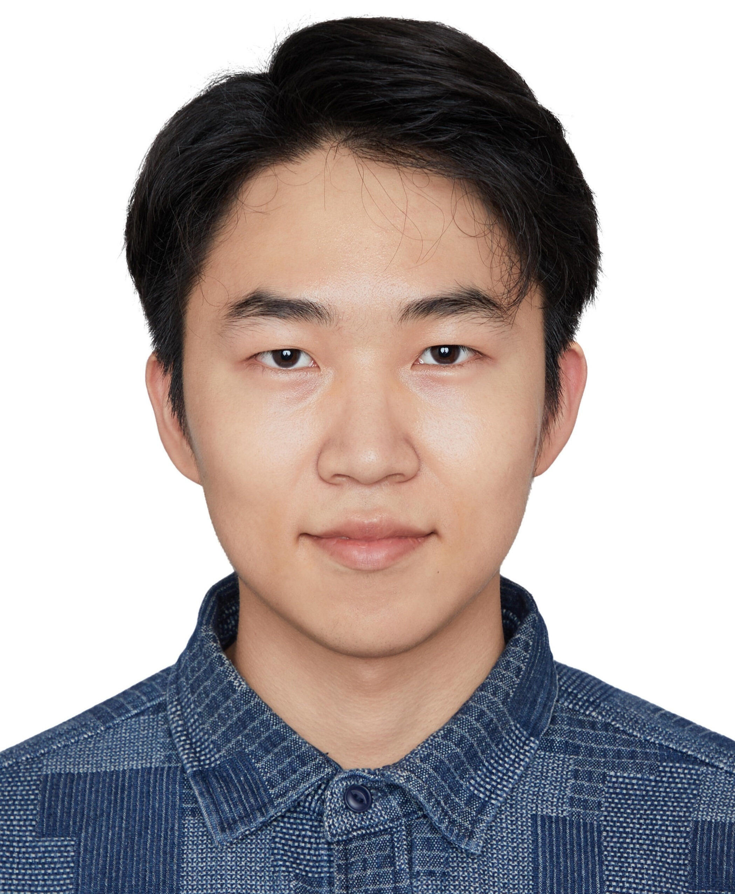

Jiaxiang Tang 唐佳翔
PhD Student · Computer Science
University of Minnesota, Twin Cities · Advisors: Zhi-Li Zhang & Ali Anwar
I am a third-year Ph.D. student in Computer Science at UMN. My research focuses on LLM systems and infrastructure — distributed training and inference, post-training and alignment systems, and high-performance AI communication. I build real-world testbeds, profile computation and communication bottlenecks, and co-design runtime, networking, and kernel-level optimizations for efficient and robust AI systems.
Research — LLM Systems & Infrastructure
I study the full system stack that makes LLMs fast, scalable, and deployable — from GPU kernels to distributed networking.
LLM Inference & Serving
Co-serving RL training and LLM inference, SLO-aware scheduling, GPU sharing, and runtime optimization (vLLM, SGLang).
Post-Training & Alignment
Scalable RLHF and multi-value alignment systems; designing robust post-training pipelines that integrate multiple alignment objectives.
AI Networking & Collective Comms
RDMA/RoCE testbeds, congestion and tail-latency measurement, NCCL/Gloo profiling, and NS-3 simulations for distributed LLM workloads.
Kernel & Performance Engineering
CUDA kernel optimization, Nsight profiling, and workload-faithful microbenchmarks to attribute latency to compute vs. communication.
Current Work
- GPU sharing & co-serving: Decentralized, communication-aware co-serving of RL training and LLM inference; studying bursty interference and SLO violations across compute and communication layers.
- Multi-value alignment (MASS): Scalable post-training system for stable integration of multiple alignment objectives with improved robustness across heterogeneous value mixtures.
- RDMA for AI data centers: Building real-world RDMA/RoCE testbeds to characterize training traffic, congestion, and tail latency; proposing system-level improvements grounded in empirical measurements.
Publications
Conference & Journal
Under Review / Manuscripts
Academic Service
Reviewer: ACL 2024
Education
Honors & Awards
- IEEE INFOCOM NSF Travel Grant (2026)
- IEEE ISIT Student Travel Grant (2023)
- Nankai International Scholarship (2019)